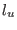
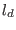
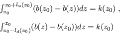
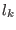
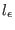
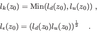
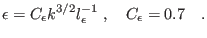

Next: The non-local, exact weak-equilibrium Up: The turbulence model Previous: Algebraic length-scale from ISPRAMIX Contents
INTERFACE:
subroutine potentialml(nlev,z0b,z0s,h,depth,NN)DESCRIPTION:
Computes the length scale by defining two master length scales  and 
|  | (184) |
From and two length-scales are defined: , a characteristic mixing length, and , a characteristic dissipation length. They are computed according to
|  | (185) |
is used in kolpran() to compute eddy viscosity/difussivity.
 is used to compute the dissipation rate,
is used to compute the dissipation rate,  according to
according to
|  | (186) |
USES:
use turbulence, only: L,eps,tke,k_min,eps_min use turbulence, only: cde,galp,kappa,length_lim IMPLICIT NONEINPUT PARAMETERS:
number of vertical layers integer, intent(in) :: nlev bottom and surface roughness (m) REALTYPE, intent(in) :: z0b,z0s layer thickness (m) REALTYPE, intent(in) :: h(0:nlev) local depth (m) REALTYPE, intent(in) :: depth buoyancy frequency (1/s^2) REALTYPE, intent(in) :: NN(0:nlev)REVISION HISTORY:
Original author(s): Manuel Ruiz Villarreal, Hans Burchard
Karsten Bolding 2012-12-28